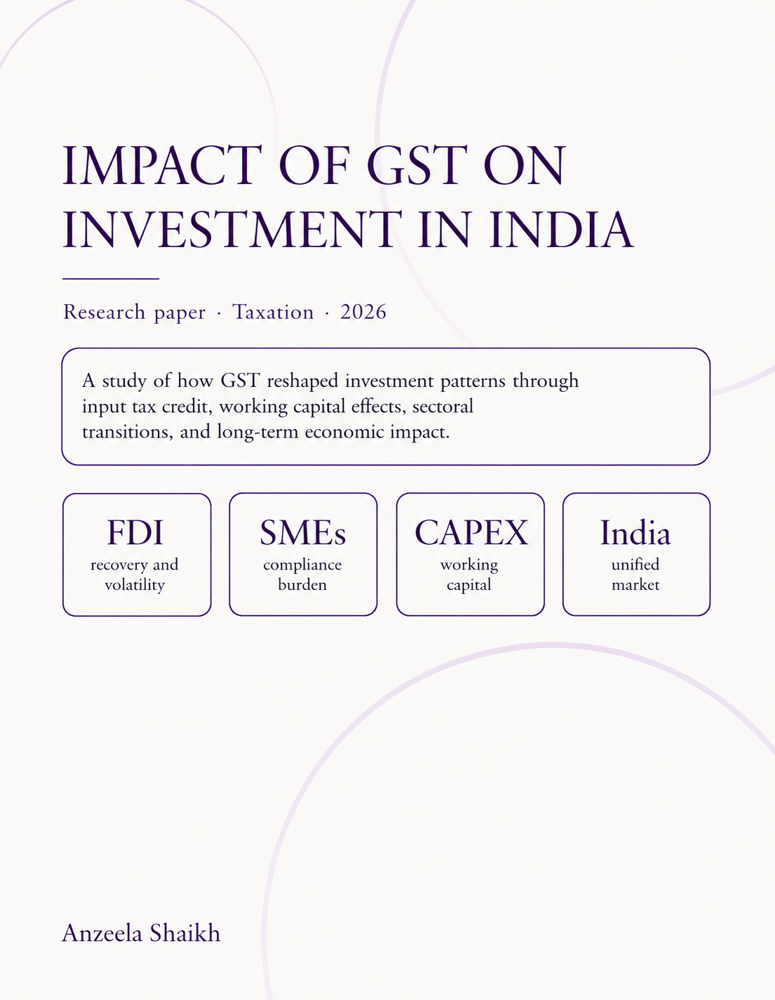
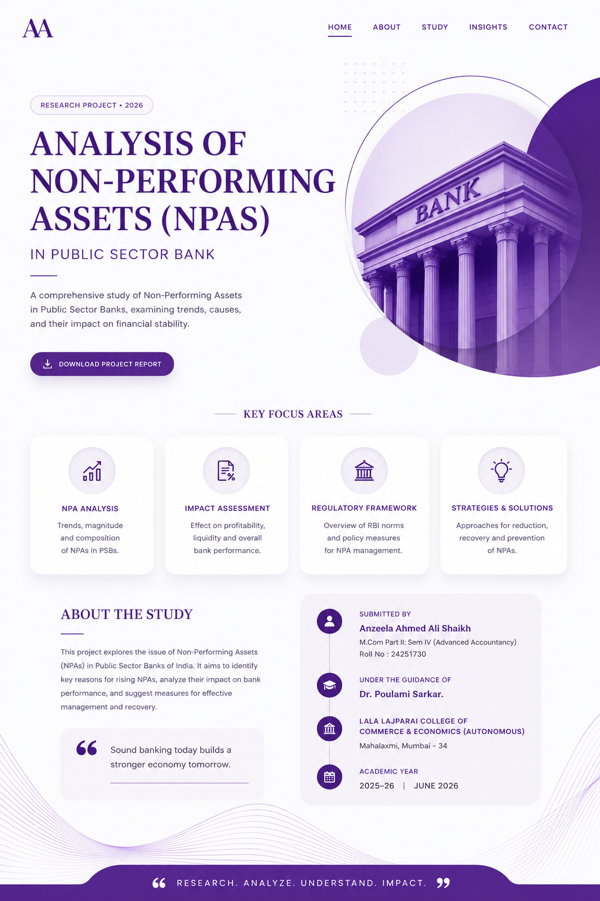

Taxation · 2026
Impact of GST on Investment in India
A study of how GST reshaped investment patterns through input tax credit, working capital, SMEs, and sectoral change.
Read research ↗ ANZEELA SHAIKHProjects & researchResume ↗
ANZEELA SHAIKHProjects & researchResume ↗Projects & research
A portfolio of work in taxation, banking, and professional services, showing how I research, organise financial information, and communicate key points clearly.
View research ↓Research papers

Taxation · 2026
A study of how GST reshaped investment patterns through input tax credit, working capital, SMEs, and sectoral change.
Read research ↗
Banking · 2026
A study of asset quality and recovery mechanisms in public-sector banks, drawing on RBI publications and financial data.
Read research ↗Project notes
A concise look at the links between GST, input tax credit, working capital, and business investment decisions in India.
Explore the study ↗An accessible introduction to NPA trends, credit risk, and why recovery mechanisms are important for bank stability.
Explore the study ↗Professional factsheets
I created these executive-style factsheets by reviewing public reports, revenue trends, workforce data, and strategic priorities for professional services firms.